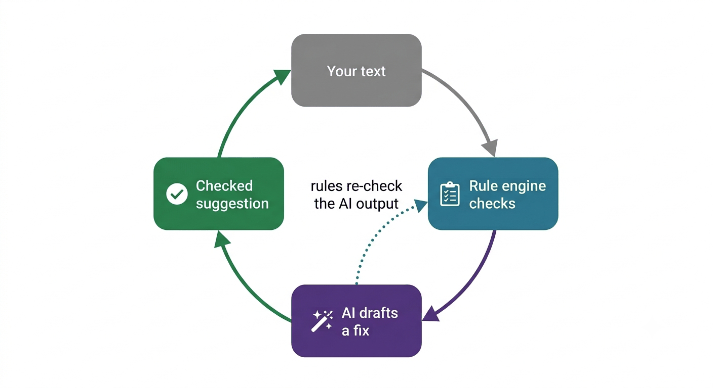

The Proof Positive difference
AI tools produce US-style text, because that is what the models are trained on. Prompting them to output in Australian style doesn't work reliably, as answers always drift towards US style (em dashes, title case headings, double quotation marks, American spelling and so on).
Proof Positive runs a deterministic rule engine over users' documents. If any AI-generated output is needed, it runs the rules over that too before showing it to you. The engine codifies over 100 rules from the Australian Government Style Manual.
How the draft-and-verify loop works

The rules check your text
A deterministic rule engine runs in your browser. The same input gives the same answer every time, and your document doesn't go anywhere.
AI drafts where judgement is needed
Rewording a tangled sentence or making list items parallel has no mechanical fix, so in these cases Claude drafts a suggestion.
The rule engine checks the AI output
Every AI draft goes back through the rule engine before you see it. Mechanical breaches are corrected automatically. Anything left is flagged for your review, never hidden.
You stay the editor
AI suggestions are always labelled with a ✦. You review them and take action as you choose. Changes are never silently applied to your document without you knowing.
The Ask tool adds one more safeguard: answers are grounded in extracts of the actual Style Manual pages retrieved for your question. Every link in an answer is checked against the pages the bot actually read. AI can still misread guidance, so check the linked page before relying on an answer.
Bot card
- Name
- Proof Positive (IM2026) – an entry in the APS Innovation Month 2026 ‘Build a Bureaucrat Bot’ challenge.
- Purpose
- Help people who write for Australian governments to apply the Australian Government Style Manual: check Word documents and pasted text, rewrite dense passages into plain English, format lists, build author–date citations and answer style questions.
- Intended users
- Australian public servants and anyone writing to Style Manual conventions. Proof Positive is a demonstration and a drafting aid. It is not an official government service and is not a substitute for editorial judgement. Human editors and judgement remain essential.
- Information used
- Public Style Manual content only, © Commonwealth of Australia, used under CC BY 4.0. The Ask tool retrieves from over 160 saved Style Manual pages. There are no user accounts and no database. Word documents are processed in your browser and never sent anywhere else. Sections of text sent to AI features are not stored by the tool or used to train models.
- Tools used
-
- A hand-built rule engine (plain JavaScript, no framework) codifying more than 100 Style Manual rules, which runs entirely in the browser.
- Anthropic's Claude models via a rate-limited Cloudflare Worker proxy, so the API key never reaches the browser. AI features are marked ✦.
- GitHub Pages for hosting (no analytics, cookies or trackers).
- Limitations
-
- The rule engine covers a codified subset of the Style Manual. It does not contain every nuance of the full guidance.
- AI suggestions can misread meaning or tone. Always compare them with your original. The verification step catches mechanical breaches, not factual or semantic errors.
- Pasted-text checks infer headings and lists heuristically. The Word document check reads real formatting and is more accurate.
- AI features have daily usage limits to keep the free tool affordable for its creator.
- Risks and mitigations
-
- Invented rules or links – Ask answers only from retrieved Style Manual extracts and can only cite pages it actually read.
- Wrong 'corrections' – quoted examples and URLs are masked so the engine never rewrites them; every automatic fix is deterministic and reported.
- Sensitive information – every AI entry point carries the same warning: don't enter classified, sensitive or personal information.
- Cost blowouts – per-user and whole-of-tool daily request limits are enforced server-side to prevent unacceptable usage costs.
- Provenance
- Built by Jen Robertson as a personal project for Innovation Month 2026. The rule engine grew from my original Style Manual Check project (a Word add-in).
Accessibility
A style tool that checks accessibility guidance should hold itself to the same standard. Proof Positive is built to meet WCAG 2.1 AA:
- semantic HTML with a skip link on every page
- full keyboard operation
- visible focus indicators
- status messages announced to screen readers
- no information conveyed by colour alone
- layouts that reflow at 400% zoom.
The tool has not yet been tested with screenreader users. If you hit a barrier, please email listformatterfeedback@gmail.com. Reports are genuinely welcome and fixes are usually quick.
Innovation Month 2026
This bot is an entry in the ‘Build a Bureaucrat Bot’ challenge run as part of APS Innovation Month 2026 (IM2026). It demonstrates a repeatable pattern: generative AI drafts and deterministic rules verify. Any team could apply the same pattern to their own guidance, legislation or business rules.